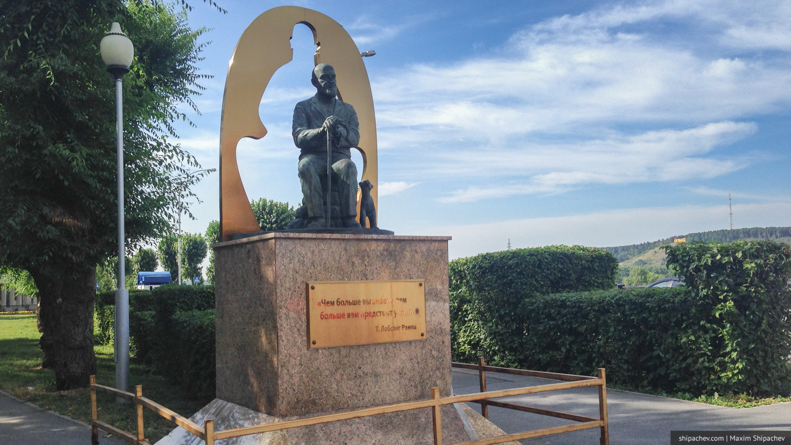

Знаете ли вы, что, кликая на первую ссылку в любой статье в википедии, вы рано или поздно придёте к статье «Философия». Нужно просто кликать по первой ссылке, а, если кликали уже по ней, тогда переходить к следующей.
В Кемерове, несмотря на молодость города, достаточно много памятников разной степени почитаемости и разных размеров. Самый главный, конечно, — памятник вождю мирового пролетариата, установленный на площади Советов. На территории бывшего СССР это, кстати, единственный памятник Ленину, где вождь одет в пальто, застёгнутом на женскую сторону.
Случается, вокруг памятников в Кемерове даже случаются небольшие скандалы. Так, ровно год назад, через 6 лет после установки, с набережной хотели убрать скульптуру «Философ». Всё дело в том, что прообразом этой скульптуры был то ли философ-буддист, то ли шарлатан-оккультист Лобсанг Рампа. Доллар год назад стоит ещё 30 рублей, воевать с продуктами не было необходимости и инициативная группа надумала себе всякого.
Прошло несколько публикаций в сетевых СМИ о недопущении чужой веры на землю Кузбасскую, в ответ йоги написали открытое письмо, потом пришла осень, время солить капусту и тема стихла.

Возвращаясь к скульптуре, нужно сказать, что несмотря на высеченные на постаменте слова Лобсанга Рампы «Чем больше вы знаете, тем больше вам предстоит узнать», это всё-таки не памятник, а именно скульптура.
По словам самого автора, Дмитрия Кукколоса, это монотеистическая композиция, не имеющая отношения к какой-либо культуре. Каждый человек сам по себе философ.
Старец, изображенный в центре композиции, сидит на части старой каменной стены. Взгляд его полон мудрости и в то же время безмятежно спокоен, потому как смотрит он вперед — в будущее. Позади его — олицетворение внутреннего духа, так называемая «аура» - это очертание монаха, сидящего в позе «лотоса». О ноги мужчины трется кошка, именно она является так называемым «проводником», соединяющим человека с его внутренним миром. В целом, по словам автора, скульптура отражает, то, что у каждого человека есть будущее и прошлое, внешняя оболочка — тело, а также душа.
Изюминкой данной композиции является то, что и человек, и кошка выполнены в натуральную величину.
Памятник по-прежнему стоит на набережной, а значит жителям Кемерова всё-таки хватило мудрости.
А абонентам Билайна хватит скорости 42,7 мегабит, которую показал Speedtest.